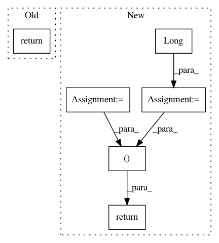

1b68a9d690f164190075fd5cf16937d191dafe75,pytext/data/bert_tensorizer.py,BERTTensorizerBase,tensorize,#BERTTensorizerBase#Any#,304
Before Change
Convert instance level vectors into batch level tensors.
return self.tensorizer_script_impl.tensorize_wrapper(*zip(*batch))
def initialize(self, vocab_builder=None, from_scratch=True):
// vocab for BERT is already set
return
After Change
tokens, segment_labels, seq_lens, positions = zip(*batch)
tokens = pad_and_tensorize(tokens, self.vocab.get_pad_index())
pad_mask = (tokens != self.vocab.get_pad_index()).long()
segment_labels = pad_and_tensorize(segment_labels)
positions = pad_and_tensorize(positions)
return tokens, pad_mask, segment_labels, positions
def initialize(self, vocab_builder=None, from_scratch=True):
// vocab for BERT is already set
return
In pattern: SUPERPATTERN
Frequency: 3
Non-data size: 6
Instances
Project Name: facebookresearch/pytext
Commit Name: 1b68a9d690f164190075fd5cf16937d191dafe75
Time: 2019-12-18
Author: stevenliu@fb.com
File Name: pytext/data/bert_tensorizer.py
Class Name: BERTTensorizerBase
Method Name: tensorize
Project Name: cornellius-gp/gpytorch
Commit Name: bf0f2522e94291480173889600ee9fd903c3d4f2
Time: 2018-05-02
Author: gpleiss@gmail.com
File Name: gpytorch/lazy/non_lazy_variable.py
Class Name: NonLazyVariable
Method Name: diag
Project Name: pytorch/pytorch
Commit Name: 0c60922fb0614132433779ad45ab8f30783db2ae
Time: 2021-02-03
Author: haichuan@fb.com
File Name: torch/quantization/_learnable_fake_quantize.py
Class Name: _LearnableFakeQuantize
Method Name: calculate_qparams